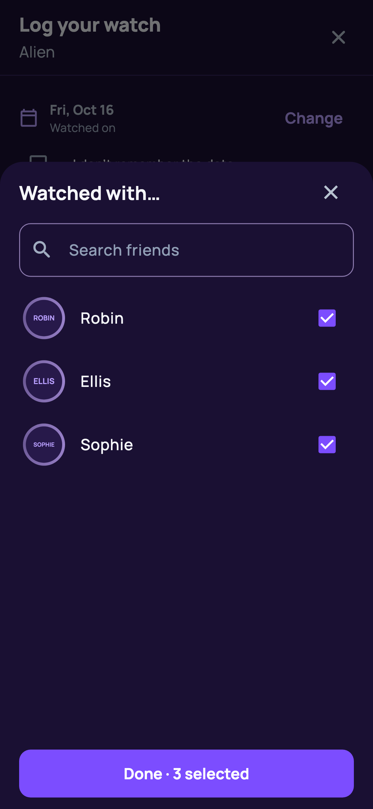
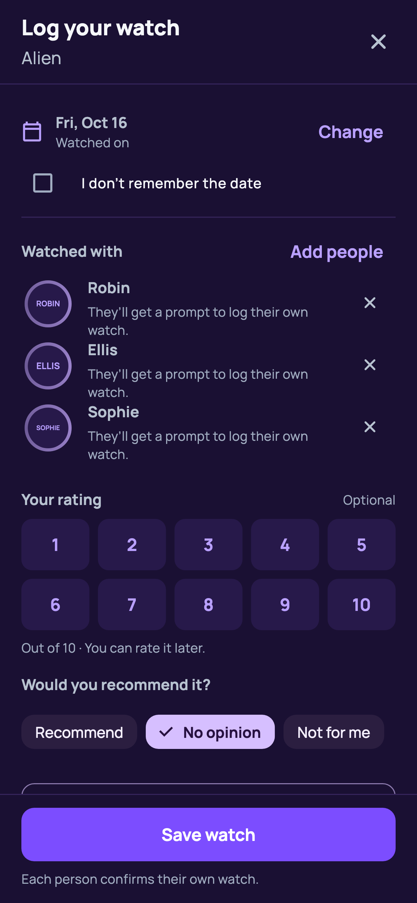
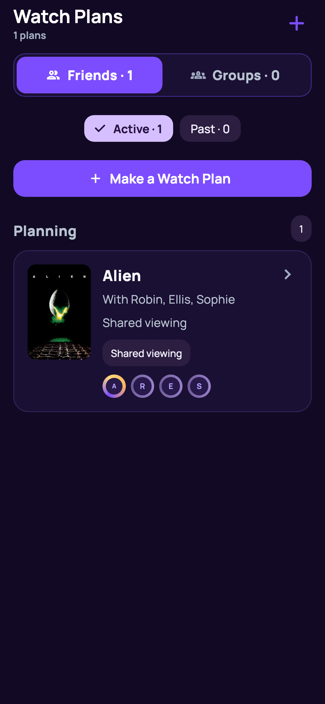
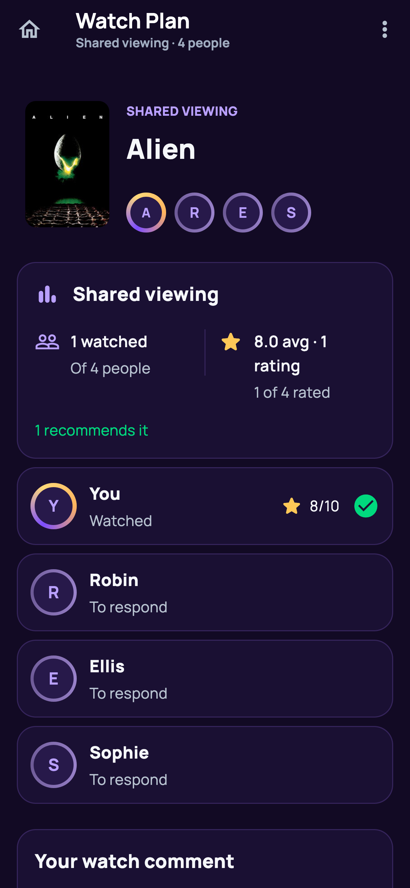
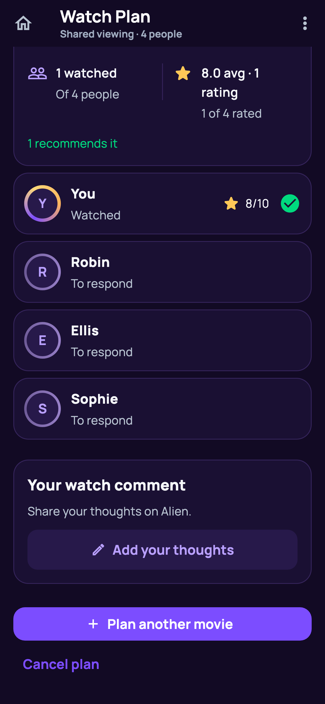
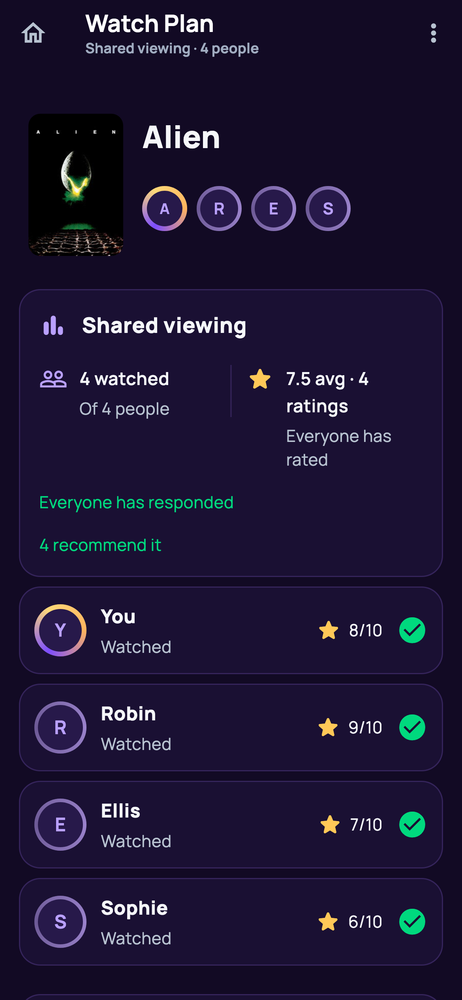
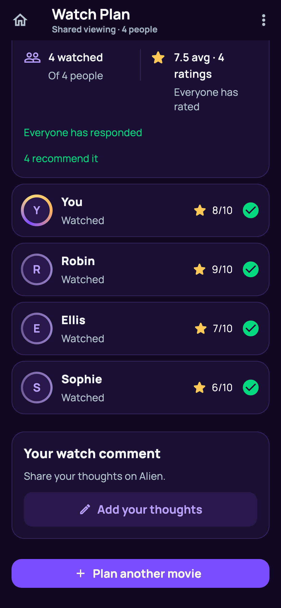
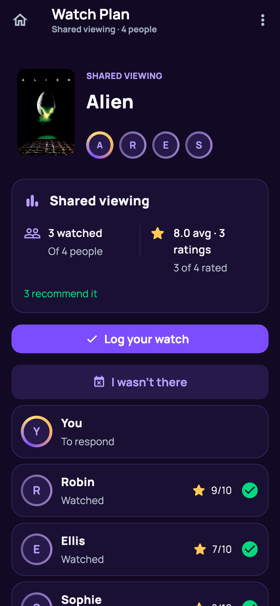
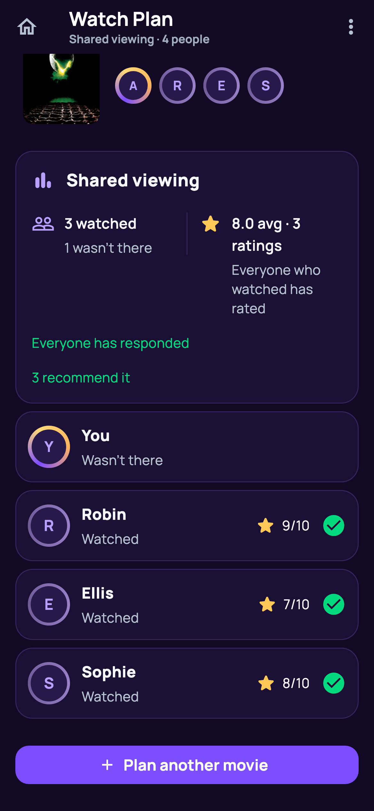

Choose three friends
You plus Robin, Ellis and Sophie: four participants in one viewing.

Your watch editor
The selected people stay together on the watch.

One card in Watch Plans
One shared viewing, rather than one plan per friend.

One person has rated
Your rating is saved; the others are still to respond.

Individual progress
Everyone remains in the same viewing.

Everyone has rated
The shared recap shows all four responses.

All individual ratings
Each person keeps their own rating.

Someone missed it
The person can choose “I wasn’t there”.

Complete with one missed response
Everyone who watched has rated. The missed person does not hold it open.

Attendance and ratings
Three ratings count toward the average; the fourth person is marked as absent.
